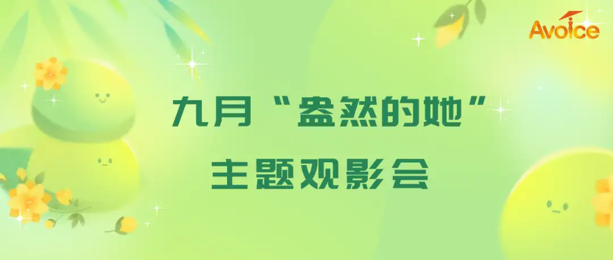
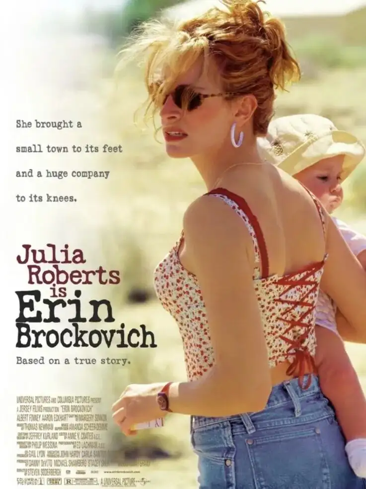

美丽的鲜花处处开放，羽毛奇特的鸟儿在树丛里婉转鸣唱。夏末秋初之际，天气转凉而“绿”却魅力不减，仍然富有生命力且真诚热烈。
《祝你好运，里奥·格兰德》
《祝你好运，里奥·格兰德》由著名英国演员、奥斯卡影后艾玛·汤普森主演，它以轻松的喜剧片形式讨论了女性衰老、外貌焦虑和性体验等热门女性话题。正如电影所表示的，中老年女性也有性需求、性欲望，但在传统的父权社会中（西方如此，东亚社会也如此），女性的性需求通常被男性配偶的需求掩盖。在性方面，女性常被视为性需求的客体而非主体。在婚姻关系中，妻子和母亲的角色的社会期待也遭受了一定的去性化，与其强烈对比的是放荡不婚的单身女郎，后者常常被认为有丰富的性生活，而前者的性生活是为传宗接代而服务。
如片中的Nancy，她与丈夫的性生活乏味、无聊、糟糕，几乎未有过高潮，她对自己的性魅力也十分不自信，但这并不是说她没有性需求，相反，她将一次完美的性体验写在人生愿望清单上。遇到了性工作者Leo之后，她开始了一次又一次悦纳自己、满足自己、将自己的需求摆在第一位的尝试。
这部影片带有西方社会性解放革命的色彩，正常化了性本身，强调中年女性也应该正视自己的性需求、性欲望。有性欲望不是什么羞耻的事，追求完美性爱高潮更不是。影片最后的结局并没有说Nancy一下就悦纳了自己，实现了性解放。但她至少向身体、心灵的双重解放迈出了第一步。
会议主题：Avoice观影会之《祝你好运，里奥·格兰德》
会议时间：2023/09/09 20:00 (GMT+08:00) 中国标准时间 - 北京
会议链接：https://meeting.tencent.com/dm/hrADRDkLWgDM
会议号：671-102-735
《永不妥协》

该电影改编自真实事件，描述了一个没有法律背景的单身母亲，历尽艰辛，以永不妥协的勇气和毅力打赢了美国有史以来最大的一宗民事赔偿案。女主人公埃琳，曾经的选美皇后，竟然做了六年黄脸婆，这样的牺牲带来的是：两度离婚，存款不足一百美元，电话费交不起，被各种账单催着。
但她的善良，她的怜悯，她的真诚直率，她的毅力，全力以赴，让她终于获得大家的尊重，走向成功。埃琳正是用自己的无比坚韧的毅力，克服难以想象的困难，向世人证明了一个“弱女子”的价值，在人生的道路上开辟了一片新的天地。
会议主题：Avoice观影会之《永不妥协》
会议时间：2023/09/09 20:00 (GMT+08:00) 中国标准时间 - 北京
会议链接：https://meeting.tencent.com/dm/lIJKZ5b6YhDJ
会议号：260-267-819
《亲密战争》
在此纪录片中，导演卢西亚·加哈采访了五位曾经遭受过家庭暴力的女性，她们分别来自不同国家——墨西哥、西班牙、美国、印度和芬兰。
它告诉我们，女性遭受暴力并不是国家经济发展程度低或某些文化因素所造成的，而是一个全球普遍存在的问题。这部纪录片获得了2018年第60届墨西哥电影艺术与科学学院阿里尔奖最佳纪录片长片奖，并获得最佳影片提名。
会议主题：Avoice观影会之《亲密战争》
会议时间：2023/09/16 20:00 (GMT+08:00) 中国标准时间 - 北京
会议链接：https://meeting.tencent.com/dm/8YgTFVdXsJ4D
会议号：652-930-997
《沙漠之花》
电影是根据国际超模华莉丝·迪里的真实事件改编的，讲述的是一个非洲割礼习俗摧残下的女孩的真实故事。在广袤无垠的非洲大漠上，乐观坚韧的沙漠之花顽强地开着，给这片荒漠带来一线生机。在这个黄沙漫天的国度。如果把那些伤害女性的落后习俗比作是沙漠，那么华莉丝凭着自身的坚毅第一个在这片沙漠上开出了属于自己的花。
会议主题：Avoice观影会之《沙漠之花》
会议时间：2023/09/23 20:00(GMT+08:00) 中国标准时间 - 北京
会议链接：https://meeting.tencent.com/dm/a2VaizrCNi5R
会议号：963-614-794
作者｜尚思宇 方梓奕 黎洛君 黄宇轩 温世聪
排版、封面制作｜倪雪贞